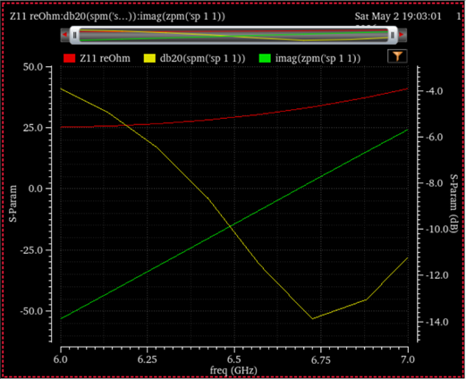
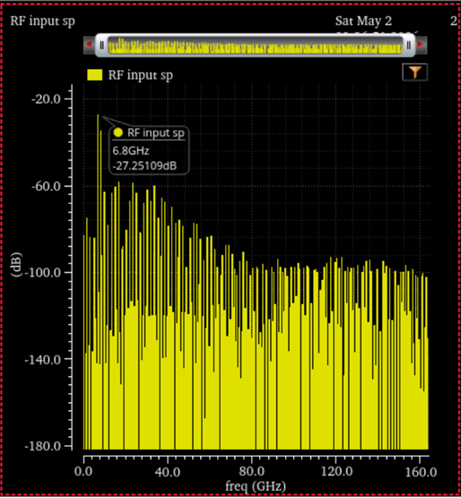
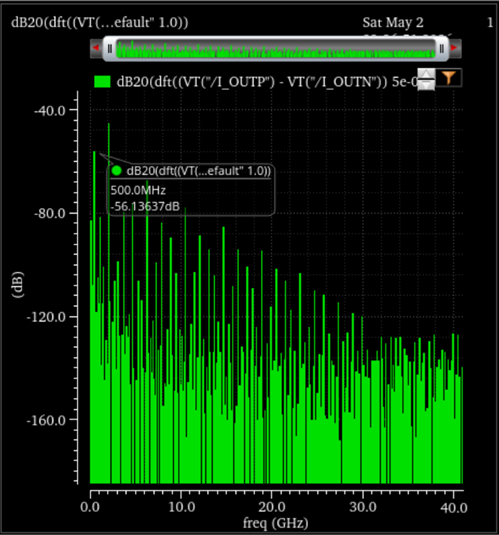
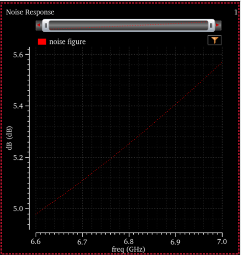
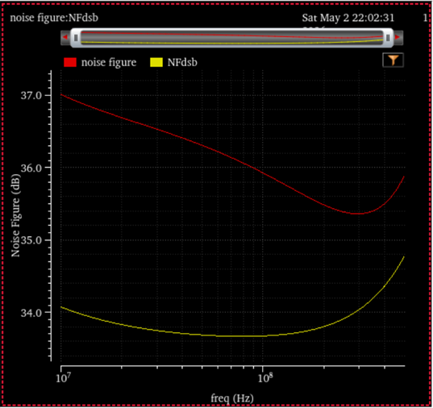
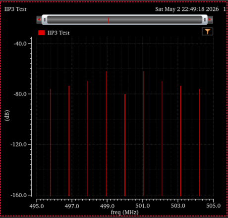

← projects / 6.8 GHz Direct Conversion CMOS Receiver
6.8 GHz Direct Conversion CMOS Receiver
ECE 6420 — Wireless IC Design | Spring 2026 | NCSU 45 nm CMOS | Cadence Virtuoso / Spectre
w/ Nikhita Ramanujam
Overview
Designed a full direct-conversion receiver (DCR) chain in NCSU 45 nm CMOS as a final project for ECE 6420. The receiver takes a 6.8 GHz RF input and downconverts it to baseband I/Q using a passive double-balanced mixer topology driven by a CML frequency divider that generates quadrature local oscillator signals from a 13.6 GHz (4.2 GHz × 2 = ... actually LO in at 4.2 GHz, doubled internally to feed divider) input.
The full chain includes an inductively degenerated LNA for low-noise input matching, followed by passive IQ mixers, with bondwire parasitics explicitly modeled as inductive matching elements throughout the testbench.
My contributions: I/Q Mixer design, full simulation results, IIP3 analysis, and integration of the receiver chain testbench. Partner Nikhita Ramanujam designed the LNA, BPF, and frequency divider.
Architecture
- LNA: Inductively degenerated cascode, 50 Ω input match via bondwire + source degeneration inductor, current-mirror biased
- IQ Mixers: Double-balanced passive mixers for I and Q paths, driven 90° apart
- Frequency Divider: CML divide-by-2 generating quadrature LO from 13.6 GHz input → 6.8 GHz I/Q
- Bondwire modeling: Q = 30, 1 nH/mm; values chosen from discrete set {0.5, 1, 1.5, 2, 2.5, 3} nH
- Pad capacitance: 15 fF at all off-chip ports
- Biasing: Current mirrors throughout; on-chip decoupling between bias and VDD/GND
Design Specifications & Results
| Specification |
Requirement |
Achieved |
Status |
| SSB Noise Figure (LNA) |
< 9 dB |
< 6 dB |
✓ pass |
| S11 (6.6–7 GHz) |
< −10 dB |
< −10 dB |
✓ pass |
| Conversion Gain (6.6–7 GHz) |
> 20 dB |
> 20 dB |
✓ pass |
| IIP3 (6.6–7 GHz) |
> −15 dBm |
≈ −20 dBm |
∼ close, did not pass |
| First Image Rejection |
> 20 dB |
> 20 dB |
✓ pass |
| Power Consumption |
< 30 mW @ 1 V |
< 30 mW |
✓ pass |
IIP3 calculation from two-tone test:
Pin ≈ -24 dBm per tone
ΔP ≈ 7.69 dB (average of upper/lower IM3 separation)
IIP3 = Pin + ΔP/2 = -24 + 3.845 ≈ -20.16 dBm
Simulation Results

S11 — input reflection < −10 dB across 6.6–7 GHz band.

Conversion gain — >20 dB across 6.6–7 GHz.

Receiver output spectrum.

LNA SSB noise figure — <6 dB across band.

Full receiver chain noise figure.

IIP3 two-tone test — IIP3 ≈ −20.16 dBm.
Tools & Technology
- Technology: NCSU 45 nm CMOS, VDD = 1 V
- Schematic & simulation: Cadence Virtuoso / Spectre
- On-chip inductor model: Q ≤ 8 (from course HW5 model)